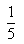
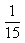

Item: tTableExtendGeometric2b
Stimulus:
| Term Number |
Term Value |
| 1 |
 |
| 2 |
 |
| 3 |
A |
| 4 |
B |
Stem:
The numbers in the table represent terms in a geometric sequence. Complete the table by filling in the values for A and B.
Inputs:
- Enter the value for A:
- Enter the value for B:
Key:
- Observable: 1/45,
1/135.
Score: 1;
Evidence Value: 1.
-
Student:Right!
-
Teacher:The student correctly generated the next two terms in a geometric sequence with fraction terms, when the sequence was presented in tabular format.
- Observable: 5,
6.
Score: 0;
Evidence Value: 0.
-
Student:Sorry, that's incorrect. You may have misread the question.
-
Teacher:The student did not correctly generate the next two terms in a geometric sequence, when the sequence was presented in tabular format. It is possible the student confused term number with term value.
- Observable: -1/15,
-1/5.
Score: 0;
Evidence Value: 0.
-
Student:Sorry, that's incorrect. The first two terms in the sequence are from a geometric sequence, not from an arithmetic sequence.
-
Teacher:The student did not correctly generate the next two terms in a geometric sequence with fraction terms, when the sequence was presented in tabular format. It is possible the student confused the definition for a geometric sequence with the definition for an arithmetic sequence.
- Observable: 1/75,
1/1125.
Score: 0;
Evidence Value: 0.
-
Student:Sorry, that's incorrect. You may have been multiplying adjacent terms, instead of multiplying each term by the common ratio, 1/3.
-
Teacher:The student did not correctly generate the next two terms in a geometric sequence with fraction terms, when the sequence was presented in tabular format. The student may have multiplied adjacent terms.
- Observable: 4/15,
1/3.
Score: 0;
Evidence Value: 0.
-
Student:Sorry, that's incorrect. You may have been adding adjacent terms, instead of multiplying each term by the common ratio, 1/3.
-
Teacher:The student did not correctly generate the next two terms in a geometric sequence with fraction terms, when the sequence was presented in tabular format. The student may have added adjacent terms.
- Observable: .
Score: 0;
Evidence Value: 0.
-
Student:Sorry, that was incorrect.
-
Teacher:Sorry, that was incorrect. In the table, we are given the first two terms of the sequence, 1/5 and 1/15. This information alone is not enough to fill out the table, but we are also told that the terms are from a geometric sequence. This means that the common ratio must be equal to the second term divided by the first term. 1/15 divided by 1/5 is equal to 1/15 times 5, which is 5/15 or 1/3. So the common ratio of this sequence is 1/3. To get the third term, multiply the second term by the common ratio. This is 1/15 times 1/3, or 1/45. To get the fourth term, multiply the third term by the common ratio. This is 1/45 times 1/3, or 1/135. The empty cells in the table should be replaced with the values for the third and fourth terms, so A should be replaced with 1/45 and B should be replaced with 1/135.
Metadata:
Item Node: tTableExtendGeometric2b,
Difficulty: 2.
Proficiencies: TableGeometric,
ExtendGeometric.